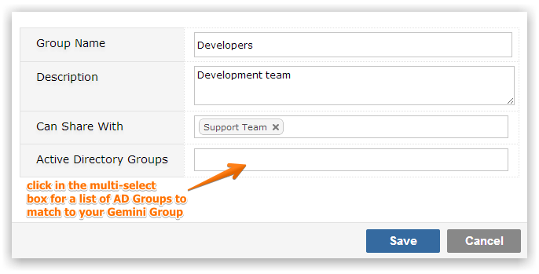

If your system is configured to work with Active Directory and the setting 'Synch With Active Directory' is checked, then when you edit the Group Screen the field 'Active Directory Groups' is displayed and will allow you to select one or more Active Directory Groups to map to Gemini Groups.

If your AD setup enables 'Add new users to Gemini found in Active Directory' as well as 'Synch With Active Directory' then your Active Directory will be polled (by default hourly) and any new users found in AD Groups that are synchronized with Gemini Groups will automatically be added.